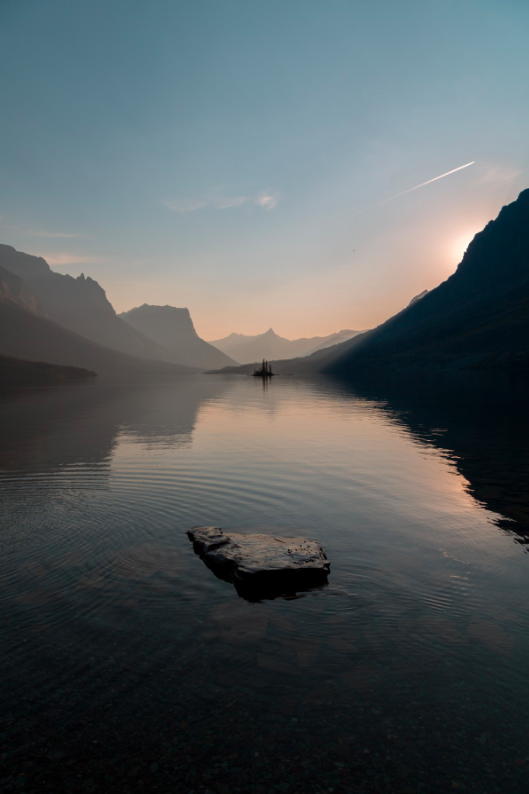
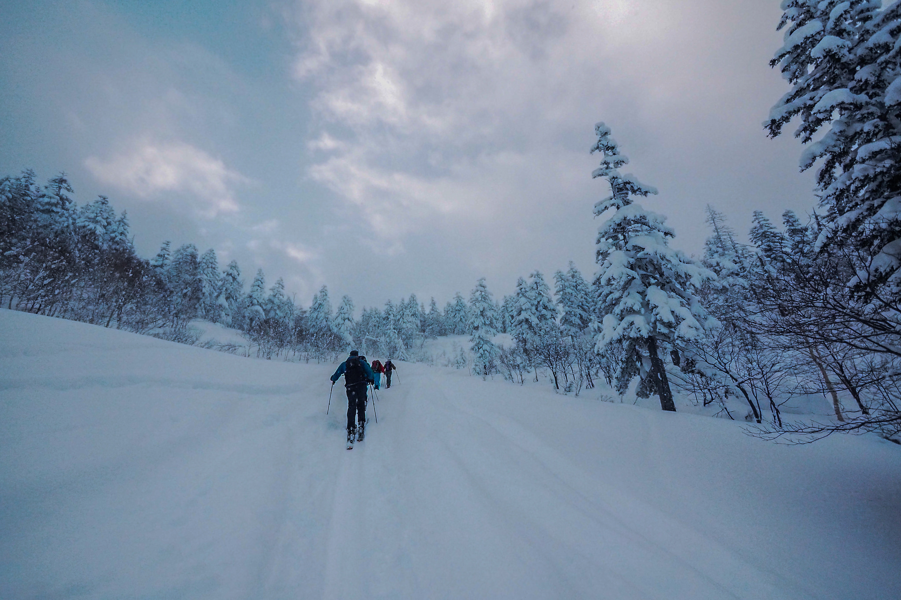
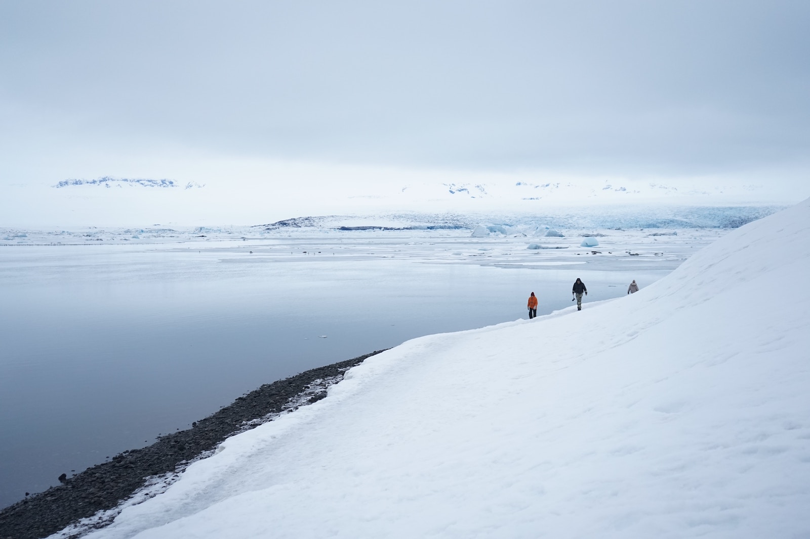
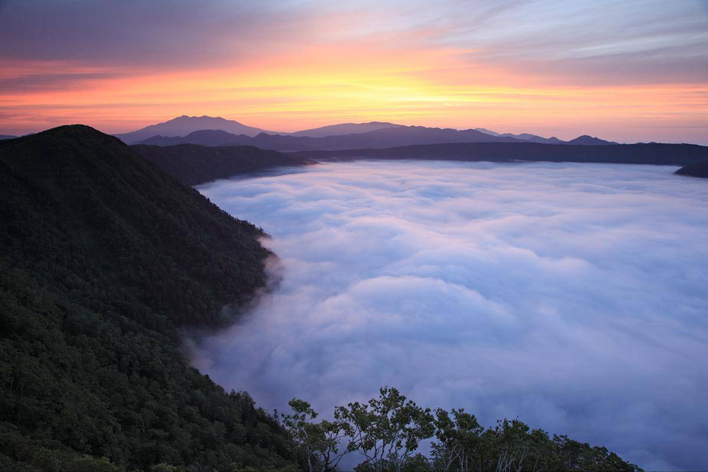
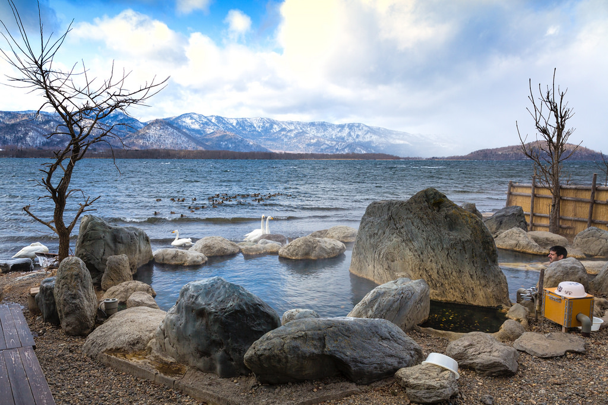

Soaring mountains, fiery volcanos, lush green forests, and glimmering blue lakes, Akan-Mashu National Park is Hokkaido at its finest.
Along with Daisetsuzan National Park, Akan-Mashu National Park is the oldest national park in Hokkaido. Though Akan is the smaller of the two, it's further from any large cities, meaning that you can get out and really experience the true Hokkaido wilderness at your own pace.
The town of Lake Akan, known as Akankohan (not to be mistaken with Akan town, which is outside the park) is a pretty onsen town with several luxurious ryokans to choose from. If you don't choose to stay the night, at least enjoy a hot rooftop onsen to admire the lake under the shadow of the giant volcano.
The lake is home to the very rare lake moss balls and there is a small museum dedicated to them. These rounded velvety green balls are found here and in very few other places globally (Iceland, Scotland, Estonia and Australia). During the winter, the lake freezes over, and the snow allows for snowshoeing with stunning views of the lake.
Reach more secluded parts of the lake by taking an 85-minute boat tour. For a cultural experience, visit the Ainu theater for a traditional dance show. A 20-minute drive away is Lake Onneto. On a clear day, you can admire the perfect reflections of the active Meakan volcano and Akan-Fuji mountain in the crystal blue waters.
From the Lake Akan area, a thrilling drive over a high winding mountain pass brings you to the town of Teshikaga. From here, it's a short drive up to the breathtaking views over the pristine Lake Mashu crater.
Continue down to the onsen town of Kawayu, where you can visit the impressive steaming and sulfurous Mount Iozan, an active volcano. Drive through Kawayu town to reach the shores of Lake Kussharo, a summer camping mecca. Try a lakeside outdoor bath meters from the shore, before finishing up at Bihorotoge pass for a sweeping vista of your day's journey.
Don't forget to bring your binoculars and camera to capture the abundance of wildlife in the Akan area. Akan is home to bears, Ezo deer, migrating Siberian swans, and the endangered Blakiston's Fish Owl. Even the rare red-crowned crane of the Kushiro Marshland venture here.
Getting There
By plane
Flying to Hokkaidō is often the cheapest way to get there. Sapporo's New Chitose Airport is the main port of entry, seeing an increasing number of direct international flights wing in from around Asia and the Pacific, including Taiwan, Hong Kong, China, Korea, Thailand, Guam and Hawaii.
By train
With the opening of the Hokkaidō Shinkansen in 2016, it's now possible to take a shinkansen (bullet train) all the way from Tokyo to Hakodate, the terminus in southern Hokkaidō. Travel on the Hokkaidō Shinkansen is included in the country-wide Japan Rail Pass.
By boat
Ferries make the journey from Honshū to Hokkaidō. This is pretty much never the cheapest way to get anywhere, and is always the least time-efficient, but the ferries themselves can be fun: long-haul ones have communal bathhouses, dining halls and even karaoke rooms.